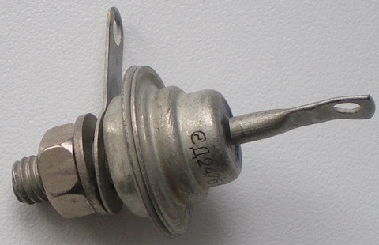
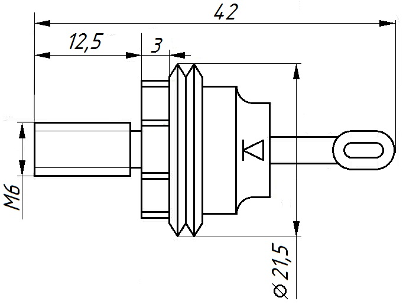

Диоды Д242, Д243, Д245, Д246, Д247, Д248
Диоды Д242, Д242А, Д242Б, Д243, Д243А, Д245, Д245А, Д246, Д247, Д248 - диффузионные, кремниевые. Основное назначение - преобразование переменного напряжения. Граничная частота - 1 кГц. Корпус диодов - металлостеклянный. Имеются жёсткие выводы. На корпусе диодов нанесена их цоколёвка и тип.
Вместе с комплектующими деталями диоды весят около 18 г.


Таблица 1
| Прямое напряжение (среднее) | |
| Д242А, Д243А, Д245А, Д246А | 1 В |
| Д242, Д243, Д245, Д246, Д247 | 1,25 В |
| Д242Б, Д243Б, Д245Б, Д246Б, Д247Б, Д248Б | 1,5 В |
| Обратный ток (средний), не более | 3 мА |
| Обратное напряжение (импульсное) | |
| Д242, Д242А, Д242Б | 100 В |
| Д243, Д243А, Д243Б | 200 В |
| Д245, Д245А, Д245Б | 300 В |
| Д246, Д246А, Д246Б | 400 В |
| Д247, Д247Б | 500 В |
| Д248Б | 600 В |
| Прямой ток (средний) | |
| Д242, Д242А, Д243, Д243А, Д245, Д245А, Д246, Д246А, Д247 | 10 А |
| Д242Б, Д243Б, Д245Б, Д246Б, Д247Б, Д248Б | 5 А |
| Рабочая температура | -60...+130°C |
Источники:
katod-anod.ru - Диод Д242, Д242А, Д242Б, Д243, Д243А, Д245, Д245А, Д246, Д247, Д248